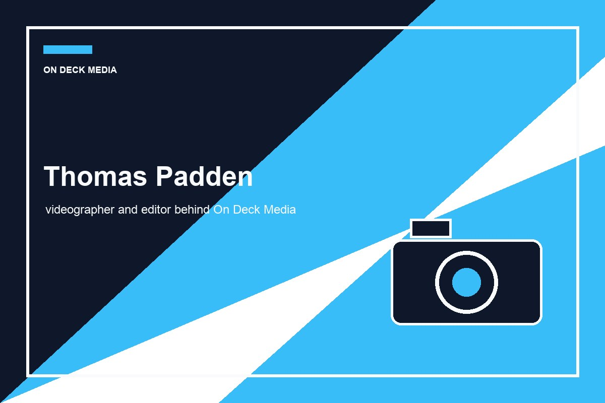

About Thomas Padden
My name is Thomas Padden, and I am the creator of On Deck Media. I focus on sports videos, interviews, documentaries, and creative video work.
I created this website to present my work in a professional way that goes beyond social media. The goal is to make it easy for potential clients to see my style, understand my services, and contact me for projects.
My creative style focuses on strong visuals, clear storytelling, clean editing, and videos that feel polished and intentional.